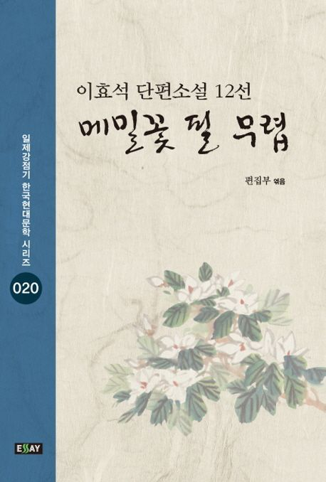

까투리
n시간 전
메밀꽃 필 무렵
이효석 작가의 단편소설로 1936년 10월[1] 잡지 《조광(朝光)》(조선일보사 발행)에 "모밀꽃 필 무렵" 이라는 이름으로 수록되었지만, 이후 표준어가 정립되고나서 "메밀꽃 필 무렵"으로 정착되었다.

까투리
n시간 전
이효석 작가의 단편소설로 1936년 10월[1] 잡지 《조광(朝光)》(조선일보사 발행)에 "모밀꽃 필 무렵" 이라는 이름으로 수록되었지만, 이후 표준어가 정립되고나서 "메밀꽃 필 무렵"으로 정착되었다.